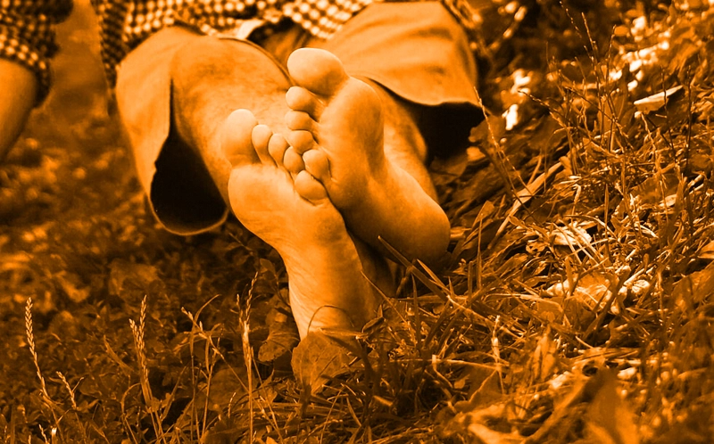

Insändare

Barfotafredag
Kära jordmedborgare, se fram emot fredagen den 24/4, icke, fredagen den varenda, för det är en (mängd) mycket speciell(a) dag(ar), nämligen Barfotafredag™!!! Under kommande evighet ska enligt de nya bestämmelserna varje fredsdag ägnas åt att släppa loss hundarna; låt dem andas, ty det är vad de förtjänar! Se fram emot att se samtliga elever utan varken skor eller strumpor. Ögna in i framtiden och se hur det skulle vara en rätt så bisarr syn att inse att du, käre läsare, är den enda med sockorna kvar. Det är därför vi på BFF-kommisionen uppmanar alla att ta del av denna tradition, och fira våra fossingar!
BFF-kommissionen äger ej officiellt varumärket barfotafredag och täcker heller inte för eventuella skadegörelsekostnader i följd av evenemanget barfotafredag